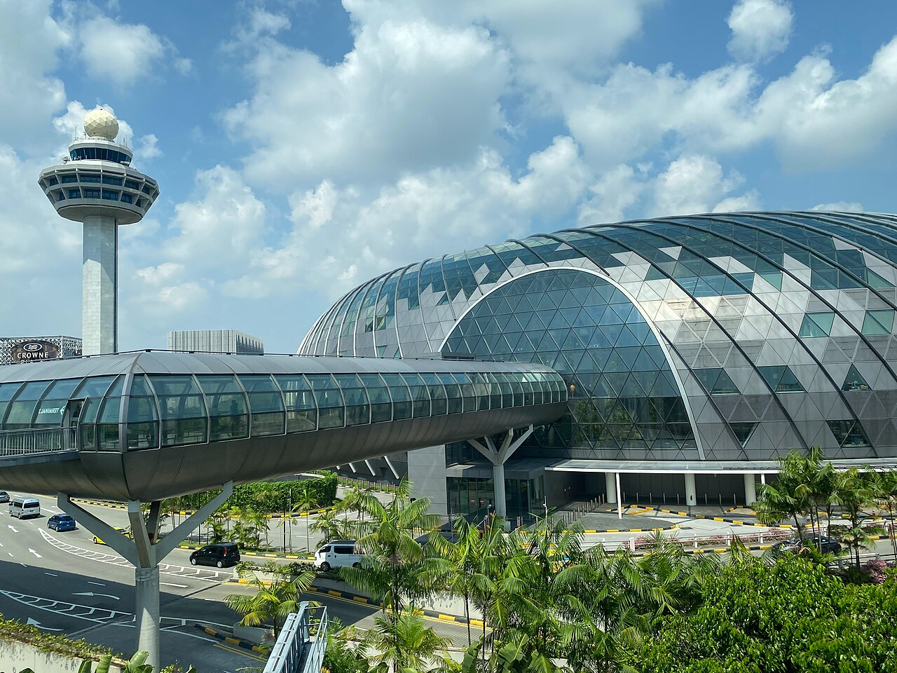

An 11-day family itinerary: Marina Bay, a Genting Dream cruise, Batu Caves, the Petronas Towers, Universal Studios and Sentosa — with transport, timings, dining and Visa perks built in.
Chennai → Singapore → Kuala Lumpur → Singapore → Chennai
Photos: Wikipedia / Wikimedia Commons, Creative Commons licences.
Your Visa perks, checked for these dates
Pelago · VISASG15
15% off Singapore activities, capped at SGD 15 per booking, new users only. Valid to 30 Nov 2026.
Play it: Have several family members open their own Pelago account and book 1–2 Universal Studios tickets each — every booking gets its own SGD 15 cap.
Sentosa Discovery Choice Pass
One complimentary Sentosa attraction worth up to SGD 55 per Visa card. Valid to 31 Mar 2027.
Play it: Redeem online in advance. Every adult with their own Visa card picks Wings of Time — the whole group sees the show free.
Dine & Save with Visa
Up to 20% off the bill at participating restaurants in Singapore and Malaysia. Valid to 31 Oct 2026.
Play it: Check dineandsave.visa.com/listing before booking each premium dinner; quote the offer when paying.
Din Tai Fung RM 20 off
Was Johor Bahru outlets only and ended 15 Sep 2026 — not usable in KL on this trip.
Play it: Din Tai Fung at Pavilion KL stays on the plan as a lunch option, just at full price.
Before you fly
✓
Singapore Arrival Card
All 8 travellers, within 3 days before Oct 16 — and again before Oct 21.
✓
Malaysia Digital Arrival Card
Within 3 days before Oct 19. Cruise disembarkation counts as an entry.
✓
Book now
Universal Studios (Pelago), Petronas Skybridge, Night Safari first tram, Wings of Time, KL apartment, Port Klang van.
✓
Group transport
Grab fits 4–6; plan two cars or pre-book a 13-seater maxi-cab for airport and cruise transfers (~SGD 65–80).
✓
Payments
Visa contactless taps onto Singapore MRT and buses; Touch 'n Go eWallet for KL hawkers.
✓
Weather
October brings afternoon thunderstorms — indoor stops are placed in the heat window.
FRI 16 OCT · CHENNAI → SINGAPORE
Arrive and settle in
14:20 depart Chennai; land Changi 21:20 (+2.5 hrs time change)
Immigration and bags ~45 min — have Arrival Card QR codes ready
Pre-booked maxi-cab to your aunt's home (Grab can't guarantee 8 seats late)
Late supper if needed: Springleaf Prata or Al-Azhar, both open 24 hours
Tip · Download Grab and SimplyGo before landing; SIM or eSIM at the Changi arrival counters.
Changi Airport

Photo: LN9267 / Wikimedia Commons, CC BY-SA 4.0 · source
SAT 17 OCT · SINGAPORE
Marina Bay from morning to lights
10:00 Merlion Park, walk the waterfront to Marina Bay Sands
12:30 Lunch at Lau Pa Sat hawker centre (premium: Din Tai Fung, MBS)
14:30 Gardens by the Bay — Flower Dome & Cloud Forest, 2–2.5 hrs indoors
18:30 Dinner at Satay by the Bay, outdoors, easy for eight
19:45 Garden Rhapsody at Supertree Grove, then Spectra at MBS (20:00 / 21:00 / 22:00)
Tip · Premium dinner swap: LAVO rooftop at MBS or Jumbo Seafood chilli crab at Riverfront.